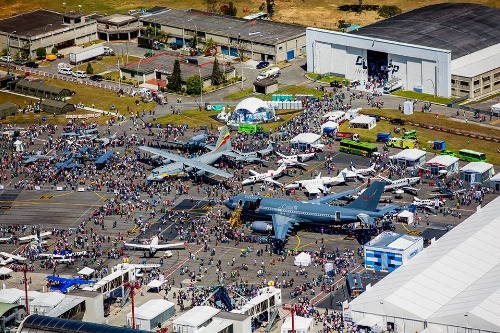
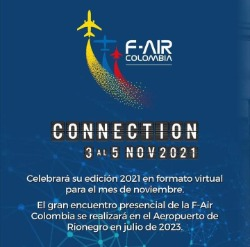

Es el encuentro aeronáutico más importante del país y uno de los más sobresalientes de Latinoamérica, el cual reunió a 62 mil visitantes (entre profesionales, aficionados, amantes de la aviación y público masivo) en su edición de 2019.
La Feria Aeronáutica Internacional F-AIR Colombia 2021 que se realiza cada dos años ya tiene fecha para su realización. Uno de los eventos de la industria aérea más importantes a nivel latinoamericano programó su décima edición para el mes de noviembre. Según confirmaron sus organizadores, el evento será de manera virtual del miércoles 3 de noviembre al viernes 5 de noviembre. Debido a la pandemia y la situación de emergencia sanitaria que vive Colombia y el mundo en estos momentos, no se permitirá el ingreso masivo de visitantes al recinto ferial.
| DIA | HORAS | HORARIO |
|---|---|---|
| Miercoles | 5 | 9:00 - 14:00 |
| Jueves | 3 | 10:00 - 13:00 |
| Viernes | 4 | 16:00 - 20:00 |